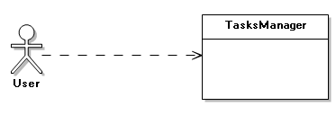
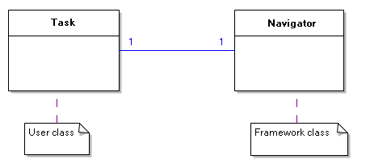
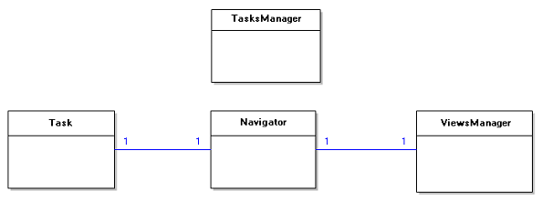
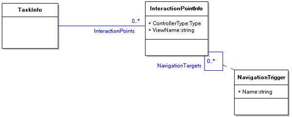
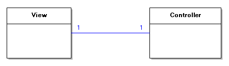
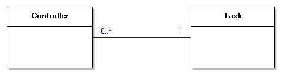
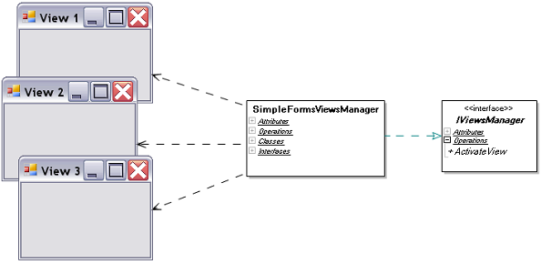

Part 2. Implementing core MVP functionality
Introduction
Basic requirements
Designing key classes
Designing a simple views manager
Summary
Introduction
In the previous article we have made our choice in favour of the Model-View-Presenter
architectural pattern. Thus our final goal is the creation of the MVP framework.
However we should firstly make it clear what does mean “MVP framework” by deciding
what the future system will be intended for and what problems it will solve.
In this article we will start with clarifying the aim of our system and gathering
some basic requirements for it. After that we will proceed to the design and implementation
stages creating fundamental classes that will meet our basic requirements.
Basic requirements
The aim of our system can be formulated as follows: it should simplify the usage
of the MVP pattern by developers. The system should make it easier to fulfill every
common task within the MVP approach. For example it should simplify such actions
as navigating between views, accessing controllers, etc. For each common operation
we will analyze how our system can help in performing it and by doing so we will
construct requirements to the system. We will express the requirements in a popular
form of use cases, each describing the desired interactions between a user and the
system.
Starting a task
To begin with let us consider how a user would start a task. Starting a task implies
certain processing (registering and initializing the task) so it would be nice to
delegate this work to the system (MVP framework). A user should be able to specify
actions performed on a task start by implementing some OnStart method. Thus given
a task descriptor the system should perform necessary processing and call the task
OnStart handler.
Starting a task
User: Pass the task descriptor to the system and ask to start the task.
System: Register the task, initialize it and invoke OnStart handler.
Here a task descriptor is something that describes the task, specifically its structure
and its properties. Let us decide what will be convenient to use as a task descriptor.
Since every task is a part of an application we might want to describe tasks directly
in the source code of the application. A good way of defining an entity (such as
task) in a source code is using a type definition construct. Therefore a task type
can be used as its descriptor. Moreover a task type (class) may define OnStart handler
method and an instance of this type can hold the task state at runtime. So this
is how the revised version of the “Starting a task” use case looks:
Starting a task (revision 1)
User: Pass the task type to the system and ask to start the task.
System: Create a task instance, register and initialize it and invoke its
OnStart operation.
Of course there must be some framework class which processes start task requests
from a user. Let us call it TasksManager:

Navigating from within a task
Every task involves a number of views with transitions possible between them. At
this point let us discuss how a user would navigate to some view from a task code.
Say some view should be activated in the OnStart handler code. It would be convenient
if the navigation is done by the framework and the navigation logic is isolated
in some Navigator class. Then each user task instance should be associated with
a proper navigator instance.

Navigating from within a task
Precondition: The task is associated with a proper navigator instance.
User: Ask that associated navigator to navigate to some view.
System: Do the navigation, alter the task state.
It is important to note that the precondition requires each task to be linked to
its navigator. Such linking may be done during the task start process. So here is
the modified version of “Starting a task” use case:
Starting a task (revision 2)
User: Pass the task type to the system and ask to start the task.
System: Create a task and a navigator instances, initialize and link them
together. Invoke the OnStart operation on the task instance.
Using various presentation mechanisms
According to the MVP paradigm the system should make it easy to use different presentation
mechanisms for example Web or Windows UI. A presentation mechanism has influence
upon how switching between views is done. Therefore it seems quite reasonable to
encapsulate view-switching code in a separate ViewsManager abstract class with subclasses
for each specific UI kind. Then the Navigator class containing some common navigation
logic will be associated with the ViewsManager class.
We can not yet formulate any use case for this requirement however the arguments
above prove the need of the ViewsManager concept. Thus the domain model at the moment
looks as follows:

Describing a task structure
From the previous article we know that every task consists of a number of interaction
points. Each interaction point in its turn is characterized by its view, controller
and possible transitions to the other interaction points (in the previous article
we decided to use "Controller" notation instead of "Presenter" so do not get confused
with such naming). A picture illustrating
this is below:

For each linked pair of source and target interaction points the NavigationTrigger
instance defines a trigger which should be called to perform the navigation. For
example a trigger “Next” may cause a transition from “Step1” view to “Step2” view
in a wizard-like application.
Notice that we don’t specify any view type in the InteractionPointInfo class since
specific view implementations are the prerogative of view managers.
As we have decided to describe a task by its type let us find out how we can accompany
a type definition in .NET with a task structural information. Interaction points
can be declared in a form of constant fields inside the task type. This allows referencing
interaction points in a compiler-checked way rather than using literal strings.
For example one may call Navigate(MyTask.View1) instead of Navigate("View 1").
class WashDishesTask
{
// Below are three interaction point definitions
// with the view names specified
public const string SelectDishes = "Select dishes view";
public const string Dishwasher = "Dishwasher view";
public const string WashComplete = "Wash complete view";
}
Such constant field alone describes an interaction point party, specifying
only the view name. We need a means to accompany such fields with controller type
and navigation triggers declarations. A good way to equip language elements (fields,
in particular) in .NET with some additional info is using .NET custom attributes. In our
case it might look as follows:
class WashDishesTask
{
[InteractionPoint(typeof(SelectDishesController))]
[NavTarget("Next", Dishwasher)]
public const string SelectDishes = "Select dishes view";
[InteractionPoint(typeof(DishwasherController))]
[NavTarget("Next", WashComplete)]
[NavTarget("Previous", SelectDishes)]
public const string Dishwasher = "Dishwasher view";
[InteractionPoint(typeof(WashCompleteController))]
public const string WashComplete = "Wash complete view";
}
The suggested here approach for describing tasks seems to be more or less handy to start with. With it the revised version of the "Starting a task" use case looks
so:
Starting a task (revision 3)
User: Add fields describing interaction points to the task type. Equip these
fields with [InteractionPoint] and [NavTarget] attributes. Then pass
the task type to the system and ask to start the task.
System: Extract the task information from its type. Create a task and a
navigator instances, initialize and link them together. Invoke the
OnStart operation on the task instance.
Accessing the controller from a view and vice versa
According to the MVP pattern views handle user gestures and then pass control to
the corresponding controller (and again I recall that we are using the "controller"
name instead of "presenter"). Moreover in MVP (in contrast to MVC) controllers may
access their views as well. Hence it should be easy for a user to access the controller
from a view code and vice versa. In MVP this is solved by linking together each
view with the corresponding controller instance.
Accessing the controller from a view and vice versa
Precondition: View and its controller are linked to each other.
User: Access that associated controller/view.

For user’s convenience it should be the framework job to link views and controllers
together. Later when designing classes we will discuss which class will be responsible
for such linking.
Accessing the task and navigating from a controller
Controllers often need to request/modify their task state. So we may require each
controller to be linked to its task.
Accessing the task from a controller
Precondition: Controller is linked to its task.
User: Access that associated task.

A controller may also need to trigger navigation to some view. This is done easily
by accessing the task and then getting its navigator.
Navigating from within a controller
Precondition: Controller is linked to its task which is connected to the
navigator
User: Access the navigator through the associated task. Invoke the navigation.
We have discussed the most fundamental requirements for the future system. Based
on these requirements we are going to proceed to designing classes.
Designing key classes
Above we have introduced a number of fundamental concepts such as task, navigator
and others by analyzing requirements for our system. These concepts with the relationships
between them make up so called analysis model of the system. Analysis classes from
this model usually turn into design classes by being equipped with operations, additional
attributes and other details.
Here we are going to walk through all the requirements we have formulated and to
design classes based on the analysis model in order to meet these requirements.
TasksManager
First let us deal with the “Starting a task (revision 3)” use case and the TasksManager
concept. According to this use case we may introduce a TasksManager class with a
StartTask(taskType: Type) method. This method should create task and navigator instances,
connect them to each other and invoke the task’s OnStart() method. It should also
create a TaskInfo instance based on the task type. Tasks are designed by users however
in order for the framework to communicate with task instances the latter should
conform to some interface. Let us call it ITask. There is also a requirement we
have missed: tasks should be able to access their tasks manager, that is why the
TasksManager should also link the created task to itself.
public class TasksManager
{
public ITask StartTask(Type taskType)
{
TaskInfo ti = GetTaskInfo(taskType); // get TaskInfo from task type
Navigator n = new Navigator(); // create navigator
ITask t = CreateHelper.Create(taskType) as ITask; // create task
t.TasksManager = this; // link the created task to itself
n.Task = t; // connect the navigator to the task
t.Navigator = n; // and the task to the navigator
t.OnStart(); // invoke the task's OnStart()
return t;
}
}
GetTaskInfo - is a method that extracts task information from a task type. Above
we suggested to describe tasks by inserting constant fields to the type definition.
However there may be other ways to equip a task type with the task information.
Hence different methods to extract such information may exist. We will isolate the
extraction logic in a ITaskInfoProvider interface with a GetTaskInfo(taskType: Type):
TaskInfo method.
public interface ITaskInfoProvider
{
TaskInfo GetTaskInfo(Type taskType);
}
It is worth keeping all configuration data including task and view descriptions
in a centralized MVCConfiguration class. Then each tasks manager will be linked
to its own MVCConfiguration instance:
public class TasksManager
...
public MVCConfiguration Config
public class MVCConfiguration
...
public ITaskInfoProvider TaskInfoProvider
A user may start a task of the same type more then once; and extracting the task
information each time is redundant. That is why we need a repository object for
all tasks configuration data. Let it be TaskInfoCollection instance.
public class MVCConfiguration
...
public TaskInfoCollection TaskInfos
If the necessary task info object already exists in the inner hash table the TaskInfoCollection
will return it, otherwise it will extract a new TaskInfo object from the task type
with the help of the TaskInfoProvider class:
public class TaskInfoCollection
{
private Hashtable taskInfos = new Hashtable();
private MVCConfiguration mvcConfig;
public TaskInfo this[Type taskType]
{
get
{
TaskInfo ti = taskInfos[taskType] as TaskInfo;
if (ti == null)
{
ti = mvcConfig.TaskInfoProvider.GetTaskInfo(taskType);
taskInfos[taskType] = ti;
}
return ti;
}
set { taskInfos[taskType] = value; }
}
}
Finally this is how the TasksManager.GetTaskInfo(...) method looks:
public class TasksManager
...
private TaskInfo GetTaskInfo(Type taskType)
{
return Config.TaskInfos[taskType];
}
Navigator
Now let us look into how the navigation occurs. Navigator class should have a public
Navigate(..) method with a navigation trigger name passed as parameter.
For a navigator to switch to another view it needs to know the task navigation structure.
Therefore it should be linked to the TaskInfo instance describing that task. Such
linking can be done in the TasksManager.StartTask(...) method:
public class TasksManager
...
public ITask StartTask(Type taskType)
{
...
n.TaskInfo = ti;
...
}
Task information is not the only needed component for a navigator to do the navigation.
Another important thing we have introduced in the analysis phase is the views manager
concept. Its responsibility is actual view switching, with different views manager
implementations capable of different presentation mechansims. The navigator will
be connected to the views manager in the TasksManager.StartTask(...) method:
public class TasksManager
...
public ITask StartTask(Type taskType)
{
...
IViewsManager vm = CreateHelper.Create(Config.ViewsManagerType)
as IViewsManager;
n.ViewsManager = vm;
vm.Navigator = n;
...
}
Note that we are using the MVCConfiguration class to store the used views manager
type.
Now we are ready to write code for the Navigator.Navigate(...) operation:
public class Navigator
{
...
public TaskInfo TaskInfo
...
public IViewsManager ViewsManager
...
public void Navigate(string triggerName)
{
string nextViewName = TaskInfo.GetNextViewName(Task.CurrViewName,
triggerName);
if (nextViewName == Task.CurrViewName) return;
NavigateDirectly(nextViewName);
}
public void NavigateDirectly(string viewName)
{
Task.CurrViewName = viewName;
ViewsManager.ActivateView(Task.CurrViewName);
}
}
Designing a simple views manager
Up to the moment we have roughly designed all key classes except for a views manager
class. Let us build a simple IViewsManager implementation. Although simple, it will
be a basis for more complicated real-life views managers.
To make our views manager as simple as possible let us assume that views are usual
windows forms. Then our SimpleFormsViewsManager will be responsible for switching
between those forms.

ViewInfo
In order to activate a form for the first time it needs to be created. Therefore
the views manager should know the view type by its name. We will encapsulate the
information about a view type in a ViewInfo class instance. Thus, given a view name,
the view manager should retrieve the corresponding ViewInfo object through the intermediate
ViewInfoCollection object.
public class ViewInfoCollection
...
public ViewInfo this[string viewName]
{
get { return viewInfoCollection[viewName] as ViewInfo; }
set { viewInfoCollection[viewName] = value; }
}
public class ViewInfo
...
public Type ViewType
Subsequent (second, third, etc.) view activations don’t require the view creation.
Instead they require locating the already created view by its name. For this the
views manager should have an association to a FormCollection class returning already
created views by their names.
public class SimpleFormsViewsManager : IViewsManager
...
private Dictionary<string, Form> forms
= new Dictionary<string, Form>();
The question is where a views manager takes the view descriptions (ViewInfo objects)
from. As views are parts of a task it is natural to store their descriptions within
that task’s description:
public class TaskInfo
...
public ViewInfoCollection ViewInfos
This approach does not bind tasks to any specific presentation mechanism since the
base ViewInfo class is independent of a specific presentation.
Next question is how a ViewInfoCollection gets populated. Obviously a user can modify
the collection at runtime. However usually a task structure is known at design time,
and a declarative syntax to describe it may apply. A good solution is to mark view
types with a [View] attribute like this:
[View(typeof(Task1), “View1”)]
class Form1: Form
…
Here we declare that the TaskInfo object for Task1 should contain a ViewInfo instance
pointing to the Form1 type. Of course there should be a class which will generate
ViewInfo objects from such declarations. Let us assign this responsibility to a
IViewInfosProvider interface with a GetFromAssembly(assembly:Assembly) operation.
It will generate ViewInfo objects from the declarations in the input assembly:
public interface IViewInfosProvider
{
ViewInfosByTaskCollection GetFromAssembly(Assembly assembly);
}
public class DefaultViewInfosProvider : IViewInfosProvider
...
ActivateView implementation
In general the view activation mechanism is quite simple: the necessary form should
be found by its name and then the Form.Show() and Form.Activate() methods should
be called on it.
public class SimpleFormsViewsManager : IViewsManager
...
public void ActivateView(string viewName)
{
Form f = FindOrCreateView(viewName);
f.Show();
f.Activate();
}
The FindOrCreate operation above should create the view in case it does not exist
yet. Of course a view creation implies certain initialization steps. These steps
may be derived from the requirements to our system. Take a look at the “Accessing
the controller from a view and vice versa” use case. It requires a view to be linked
to the controller during the initialization process:
public class SimpleFormsViewsManager : IViewsManager
...
private Form FindOrCreateView(string viewName)
{
Form result;
if (!forms.TryGetValue(viewName, out result))
{
result = CreateHelper.Create(ViewInfos[viewName].ViewType) as Form;
forms[viewName] = result;
(result as IView).ViewName = viewName;
InitializeView(result as IView);
}
return result;
}
private void InitializeView(IView view)
{
view.Controller = Navigator.GetController(view.ViewName);
view.Controller.View = view;
}
In this code we make the Navigator class responsible for holding the controllers
for its task. Navigator will also create and initialize controllers if needed. According
to the “Accessing the task and navigating from a controller” use case a controller
initialization should include its linking to the task:
public class Navigator
...
public IController GetController(string viewName)
{
IController result = controllers[viewName] as IController;
if (result == null)
{
InteractionPointInfo iPointInf = TaskInfo.InteractionPoints[viewName];
result = CreateHelper.Create(iPointInf.ControllerType) as IController;
result.Task = Task;
controllers[viewName] = result;
}
return result;
}
Manual view activation
What happens when a user himself clicks on a form and activates it? That means the
user decides to do the navigation to the selected view. Thus the Navigator.Navigate(…)
operation should be called in response to the manual view activation. We can implement
this by handling the Form.Activated event:
public class SimpleFormsViewsManager : IViewsManager
...
void view_Activated(object sender, EventArgs e)
{
Navigator.TryNavigateToView((sender as IView).ViewName);
}
public class Navigator
...
public void TryNavigateToView(string viewName)
{
if (TaskInfo.CanNavigateToView(Task.CurrViewName, viewName))
Task.CurrViewName = viewName;
ViewsManager.ActivateView(Task.CurrViewName);
}
Navigator.TryNavigateToView(...) does the following: if navigation to the destination
view is possible via any of the navigation tree ribs (i.e. CanNavigateToView returns
true) then the destination view gets activated, otherwise the source view is activated.
Thus if a user clicks on a view that is not accessible from the current one, then
the task will remain in the current view and the views manager will switch back
to the current view.
Summary
Throughout this article we have developed the core classes of the future MVP framework.
These classes help users in fulfilling the main Model-View-Presenter usage scenarios,
and establish a firm ground for the futher famework's growth and extension.
Note that the SimpleFormsViewsManager class sources as well as examples on using
MVC# framework are bundled with MVC# sources and located in the "Examples" folder.
Proceed to Part 3: Designing a
Windows Forms views engine
Copyright © www.MVCSharp.org